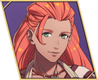
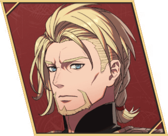
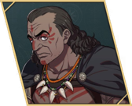

Characters
Lords


First used on Path 1: Cai


First used on Path 2: Dietrich
 Fabio
Fabio  Esmeralda
Esmeralda 
Mikaela Yang Jie
Yang Jie 
Gaitz Io
Io 
Kiroc Goliath
Goliath  Jester
Jester  Ursula
Ursula  Benditz
Benditz  Noctula Fabio Esmeralda
Noctula Fabio Esmeralda 
MikaelaYang Jie 
GaitzIo 
KirocGoliath Jester Ursula Benditz Noctula